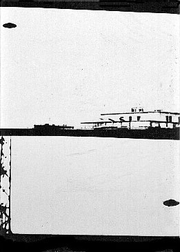
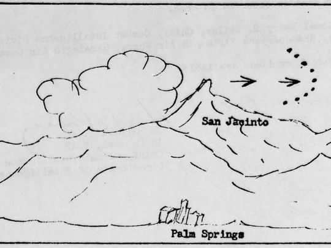
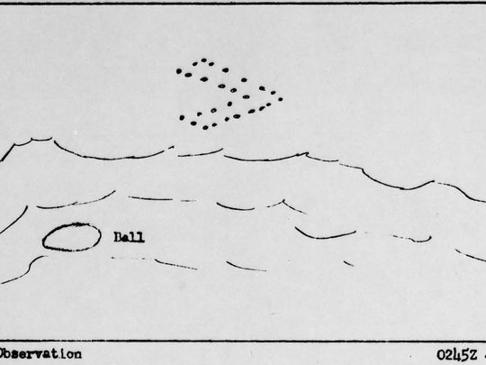

La couverture de La Domenica Del Corriere ce mois-là,
sous-titrant Vague de disques volants en Italie
Au Portugal,
l'armée de l'air rencontre un ovni durant 40 mn
Clear Intent, p. 147Ferreira, Captain Jose Lemos, FSR, vol. 4, n°
3, 1958, pp. 2-3.
Alors qu'il était sur une colline en dehors de la ville à côté de l'estuaire de Mersey
près de Runcorn dans le Cheshire (Angleterre), James Cook
voit un ovni descendre. Il est invité à monter dedans par des entités au visage de bébé, qui lui expliquent leur
utilisation de l'énergie électromagnétique et lui demandent de délivrer un avertissement au peuple de la Terre,
faisant part de leurs craintes de nôtre affection pour les armes de destruction massive qui pourraient rompre
l'équilibre de la planète. Cook rapportera avoir passé 2 jours dans un Mysterious
BritainFortean Times n° 229, 2007, p. 26.
Le général J. J. Kelly à un député : Nous n'avons refusé de communiquer aucun rapport au
NICAP. Intentions pour le moins contredites le 15 novembre.
A Tulsa (Oklahoma), observation de Whitson Cas Blue Book inexpliquéListe de McDonaldIndex du FUFOR.
Le journaliste Ibrahim Sued publie dans le journal de Rio O Globo un article
indiquant que des témoins ont vu un ovni exploser
au-dessus de la mer près d'Ubatuba à Sau Palo (Brésil). Les témoins étaient sur la plage lorsqu'ils ont vu un
disque volant s'approcher à une vitesse incroyable et remonter pour éviter de percuter l'eau. Alors qu'il se
déplace toujours rapidement, il explose en des milliers de fragments qui tombent dans la mer. Un certain nombre de
ces fragments tombent près de la plage et certains sont récupérés. Un des témoins envoie 3 fragments dans une lettre
au journaliste Sued. Le jour-même l'enquêteur et docteur brésilien Olavo T. Fontes,
interroge Sued. Il lui fait savoir qu'il a des relations permettant l'analyse scientifique des débris, et repart
avec.
A Fort Devens (Massachusetts), l'armée rapporte 8 ovnis ronds
oranges volant au-dessus de la base, dont 1 oscillant de haut en bas UFO Evidence, NICAP, IV.
À Point Pleasant (New Jersey), Connell voit un phénomène
en forme de boomerang qu'il estime plus gros que le terrain d'une maison. L'herbe est applatie Vallée,
J. F.: Magonia 403Index du FUFOR.
 Photographies à
Pescara (Italie) le 27
Observation du colonel Chase, aux commandes d'un bombardier B-25.
Des enregistrements et perturbations radars sont notés.
Un objet volant non-identifié est
repéré par plusieurs radars (piste de 1class="place "mn par FPS-3 à Montauk Point et 9 mn par CPS-6B à
Benton, avec un espace de entre les 2, la totalité de l'observation ayant duré dans les 20 mn
class="place "?) volant à sur une trajectoire relativement droite depuis l'extrêmité Est de Long Island
jusqu'aux environs de Buffalo (New York). L'objet se déplace vers l'ouest à une altitude de 50class="place "000
pieds et vitesse de 2000 noeuds (2300 miles/h). Un blocage par contre-mesures et rapporté par plusieurs radars
des environs et vers l'ouest jusqu'à Chicago. La détection aurait déclenché une alerte jusqu'à la Maison
Blanche, et des rencontres de haut niveau de la CIA, du renseignement de l'USAF, de l'IAC Watch Committee. La
vitesse varia de 1500 à 4500 miles/h CUFON, Fichiers de Ridge Sparks, B.: Plusieurs documents de la CIA publié par FOIA.
A la base aérienne de Kadena (Okinawa) le S/Sergent
H. T. O'Connor et le S/Sergent H. D. Bridgeman observent un objet ressemblant à une bouteille de coca-cola sans
le goulot, translucide et fluorescent. L'objet fait des passes de du Nord au Sud, avec
(4 x 5 à 10 s?) entre les passages Cas Blue
Book n° 4959 non résoluBerliner, D..
Mémo de la CIA sur une observation la veille. Concluant à la possiblité d'un phénomène
météo exceptionnel et excluant l'hypothèse d'un engin soviétique.
À Paris (France), un officier de l'embassade US et sa femme
signalent de manière confidentielle un ovni elliptique brillant UFO Evidence, NICAP, X.
 Croquis de
l'observation du 29 depuis Palm Springs
 Croquis de
l'observation du 29 depuis Palm Springs
À Palm Springs, au moins 3 personnes (2 adultes, 1 adolescent) voient un groupe de
nombreux objets blancs-bleûtés, volant vers le nord-ouest en plusieurs vagues pendant . Des témoins
dessineront les objets volant en formation en "V" au-dessus des montagnes. Le projet Blue Book concluera à
l'observation probable d'un appareil conventionnel, tout en questionnant la fiabilité des témoins
"Project
10073 Record Card" < Black Vault .